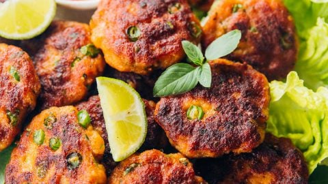

Raw Vegan Thai Coconut Soup (Tom Kha)
Raw Vegan Thai Coconut Soup (Tom Kha) is a refreshing, chilled soup made with raw coconut milk, aromatic ingredients like lemongrass and kaffir lime leaves, and fresh vegetables.

Classic Thai Fish Cakes
Classic Thai Fish Cakes are savory patties made from a blend of fish paste, red curry paste, and fresh herbs.
Pineapple Chicken Thai Fried Rice
Pineapple Chicken Thai Fried Rice is a delightful Thai-inspired dish featuring tender chicken, sweet pineapple chunks, and a mix of vegetables.
Tropical Thai Coconut-Tapioca Pudding
Tropical Thai Coconut-Tapioca Pudding is a creamy and satisfying dessert made with chewy tapioca pearls simmered in rich coconut milk.

Easy and Versatile Mango Sauce
Easy and Versatile Mango Sauce is a flavorful and tangy condiment made with ripe mangoes, garlic, and coconut milk.